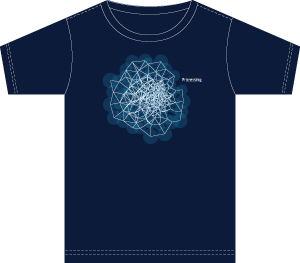
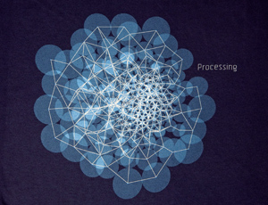
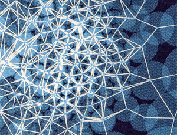

If you're interested in buying a book about Processing, please consider buying
it from this site; a percentage of the sales supports future Processing Development.
There's more information about each book on the Books page.

Processing: A Programming Handbook
for Visual Designers and Artists
Casey Reas and Ben Fry (Foreword by John Maeda)
» Order from Amazon.com

Visualizing Data
Ben Fry.
» Order from Amazon.com
|
|
We're selling t-shirts to fund Processing development. We've partnered with
Wire & Twine
to make this happen. The shirts are hand screened in Oxford, OH, the home of the
Processing 1.0 launch. Shirts are 100% cotton American Apparel navy.
Please note that American Apparel sizes run small;
order a size up if you are not familiar with their fitted cut or
learn more here.
For international shipping questions, please write to
Wire & Twine directly.
| |
Style P52009A \ The BEAUTY
$22 USD + S&H
|
| |

This shirt features a network image created with the
code written for the Processing web header and the
cover of the Reas/Fry book.
|
| |
|

|
| |
|

|
|